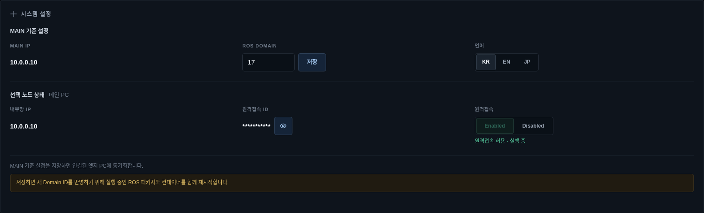
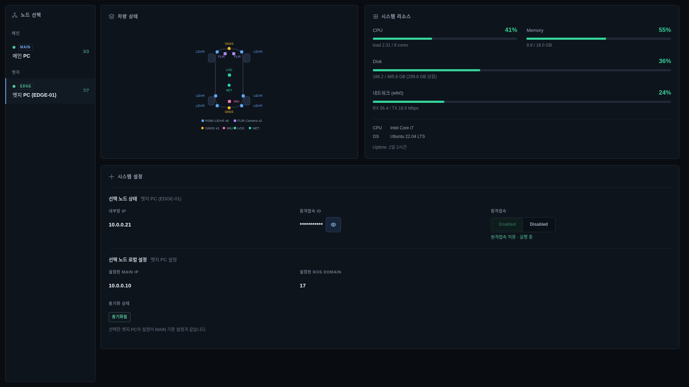
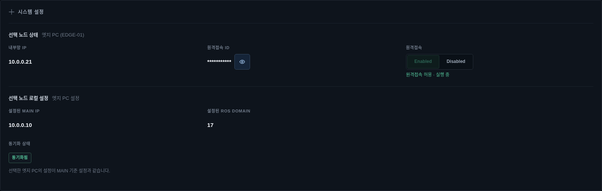

🖥️ System Manager 사용 가이드¶
System Manager는 설치된 PC의 CPU·memory·disk·network·GPU, package 기반 차량 장치 요약, 중앙 설정과 원격접속 상태를 한 화면에서 확인하는 host 상태·설정 화면입니다. 자원과 설정을 표시·입력하지만 package, Autoware 또는 OTA lifecycle을 대신 소유하지 않습니다.
1PC에서는 그 PC의 자원과 배정된 패키지를 확인합니다. 분산 구성에서는 A-ECU와 연결된 HMI-ECU를
각각 확인합니다. 아래 예시 캡처의 MAIN·EDGE 표기는 이전 화면의 역할 이름이며, 실제 장비 이름은
플랫폼 배정을 따릅니다.
오프라인 배포용 편집본은 System Manager PDF 사용 설명서입니다.
대상 차량 운용·정비 담당자
시작 위치 System Manager 또는 CLI
완료 기준 PC 자원·연결·설정 확인
1. 시작과 진입¶
설치 묶음의 ./bootstrap.sh를 완료하면 main 로그인 뒤 Furive OS가 자동으로 열립니다. System Manager를
선택하면 MAIN과 등록 edge의 최신 상태를 조회합니다. 설치된 역할은 자동으로 사용됩니다.
화면이 열리지 않거나 값이 갱신되지 않을 때는 다음 공개 명령으로 확인합니다.
재시작은 차량 운행, 기록·전송, Autoware 빌드와 OTA 적용을 모두 끝낸 정비 상태에서만 수행합니다.
⌨️ CLI로 같은 작업하기¶
| 확인할 것 | 명령 |
|---|---|
| 이 PC의 자원·네트워크·설정 | furive system status |
| 원격접속 허용 상태 | furive system remote-access status |
| 오디오 상태 | furive system audio status |
PC 시간 상태 확인¶
furive system status는 이 PC의 시간 기준·보정 상태도 보여주며, furive status는 미확인·시간 차이 등
운용 문제를 요약합니다. 외부 표준시, 인터넷 없이 사용하는 차량 내부 기준, 보정 중과 미확인을 구분합니다.
1PC에서는 한 호스트의 시계를 사용하고 분산 구성에서는 인증된 PC 연결로 시간 표본을 교환합니다.
큰 차이는 즉시 점프시키지 않고 점진적으로 보정하므로 연결 직후에도 보정 중일 수 있습니다.
새 source나 OTA를 받았다는 이유만으로 기존 PC의 시간 서비스 설치가 완료되지는 않습니다. 설치 적용과 관측 결과를 구분하고 PC 시간 동기화를 확인합니다.
꼭 확인
CLI의 시스템 상태·오디오·전원 명령은 입력한 PC 기준입니다. A-ECU의 ROS Domain 변경은 연결된 PC에도 전달되므로 정비 상태에서 사용합니다. 시스템 명령어 표에서 범위를 확인하세요.
2. 먼저 지킬 안전 원칙¶
주의
ROS Domain 저장은 실행 중인 관련 ROS package와 container를 함께 재시작할 수 있고, 원격접속 차단은 현재 연결을 즉시 종료합니다. 화면 확인 목적으로 설정을 바꾸지 않습니다.
- 자원 사용률은 순간값입니다. 한 번 높은 값보다 지속 시간, process와 기능 영향을 함께 봅니다.
- 차량 그림의 센서 색상은 관련 package 상태 요약이며 센서 데이터 품질이나 물리 장착을 보증하지 않습니다.
- MAIN IP와 ROS Domain은 연결된 edge와 ROS graph 전체에 영향을 줍니다. 승인된 network 계획을 따릅니다.
- 원격접속 ID는 필요한 순간에만 표시하고 캡처·채팅·운영 문서에 남기지 않습니다.
- 원격접속 차단을 차량 비상정지나 Autoware 중지 수단으로 사용하지 않습니다.
3. MAIN 전체 화면 읽기¶

노드 선택: MAIN과 edge, 실행 중/전체 package 수와 연결 상태를 표시합니다.차량 상태: LiDAR·Camera·GNSS·IMU·LOG·NET 관련 package 상태를 차량 배치 위에 표시합니다.시스템 리소스: CPU, memory, disk, network와 GPU 사용률을 보여 줍니다.- 상세값: load/cores, 사용·전체 용량, RX/TX, VRAM·온도와 장치명을 표시합니다.
시스템 설정: MAIN 기준 설정과 선택 노드 상태를 한 영역에서 구분합니다.- 경고문: ROS Domain 저장처럼 재시작을 동반하는 변경 범위를 설명합니다.
노드 옆 3/3, 7/7은 실행 중/전체 package 수입니다. 모든 수가 같아도 입력 topic, 장치 health와 차량 기능은
각 시스템 화면에서 별도로 확인합니다.
4. 시스템 리소스 판단¶
| 항목 | 확인할 값 | 이상일 때 함께 볼 것 |
|---|---|---|
| CPU | percent, 1분 load, core 수 | 빌드·녹화·인지 process와 지속 시간 |
| Memory | used/total과 percent | swap, OOM, 재시작 증가와 기능 정체 |
| Disk | used/total/free | DLS session, image, log와 보존 정책 |
| Network | interface, RX/TX와 사용률 | link, packet loss, main↔edge·Zenoh 상태 |
| GPU | utilization, VRAM, 온도 | Autoware 인지, display와 driver 오류 |
UI는 80% 이상을 경고 색, 92% 이상을 오류 색으로 구분합니다. 이 기준은 조사 시작점이며 hardware별 온도 한계, disk 보존 정책 또는 실제 기능 지연 기준을 대체하지 않습니다.
disk가 높을 때 DLS나 package 폴더의 파일을 임의 삭제하지 않습니다. DLS는 NAS 성공 표식과 보존 정책을 확인한 완료 session만 승인된 절차로 정리합니다. image·log 정리는 각각의 공통 owner를 따릅니다.
5. MAIN 기준 설정¶

MAIN IP: edge가 연결할 기준 주소입니다. 화면 표시값이며 여기서 직접 편집하지 않습니다.ROS Domain: MAIN과 연결 edge의 공통 ROS_DOMAIN_ID입니다.저장: 새 Domain을 저장하고 관련 ROS package·container 재시작을 요청합니다.언어: KR/EN/JP 화면 언어를 바꿉니다. runtime 상태에는 영향을 주지 않습니다.선택 노드 상태: 현재 선택한 MAIN 또는 edge 이름과 내부망 IP를 표시합니다.원격접속 ID: 기본 마스킹되며 눈 아이콘으로 일시 표시합니다.원격접속: Enabled/Disabled와 host service의 실제 상태를 함께 표시합니다.- 하단 안내: MAIN 기준 설정이 edge에 동기화되고 ROS package가 재시작된다는 경계를 보여 줍니다.
ROS Domain 변경 순서는 다음과 같습니다.
- 차량 운행과 Autoware를 종료합니다.
- DLS 녹화·재생, MGMT/HMI 확인 작업을 끝냅니다.
- 모든 edge가 연결됐는지 확인합니다.
- 승인된 Domain ID를 입력하고
저장을 한 번 누릅니다. - 확인창에서 관련 package·container 재시작 범위를 읽고 승인합니다.
- 재시작 진행 목록과 각 package 결과를 확인합니다.
- MAIN과 모든 edge의 설정 동기화, ROS topic과 실제 기능을 확인합니다.
일부 package 재시작이 실패하면 Domain을 다시 바꾸지 말고 실패 package 로그와 node 연결부터 해결합니다.
6. EDGE 자원과 장치 상태¶

edge를 선택하면 다음 값이 해당 edge 기준으로 바뀝니다.
- CPU·memory·disk·network와 GPU 존재 여부
- 내부망 IP와 uptime
- edge package 실행 수
- 센서·LOG·NET 관련 package 색상
- edge가 보고한 원격접속과 local config
센서가 회색이면 관련 package가 실행 중이 아니거나 알려진 package 이름으로 보고되지 않은 상태입니다. 빨간색은 오류·크래시 package가 관측된 상태입니다. 녹색이라도 frame rate, timestamp, calibration과 실제 sensor data는 진단·RViz·package 로그에서 확인합니다.
edge가 연결 안 됨이면 마지막 resource 값이 남아 있을 수 있으므로 현재값으로 판단하지 않습니다. package를
시작하기 전에 node heartbeat와 control plane을 복구합니다.
7. EDGE 설정 동기화¶

edge 설정 화면은 선택 edge가 실제로 보고한 local MAIN IP와 ROS Domain을 MAIN 기준값과 비교합니다.
| badge | 의미 | 조치 |
|---|---|---|
| 동기화됨 | 두 값이 MAIN 기준과 같음 | ROS 기능을 별도 확인 |
| 불일치 | 한 값 이상이 기준과 다름 | 운행 시작 전 설치·동기화 경로 조사 |
| 일부 미보고 | 한 값만 보고됨 | edge status와 버전 확인 |
| 미보고 | local config telemetry 없음 | edge 재연결·재시작 뒤 다시 확인 |
불일치를 화면에서 직접 덮어써 숨기지 않습니다. MAIN 기준 설정은 한 곳에서 저장하고 edge가 받은 결과를 후속 telemetry로 확인합니다. edge별로 별도 영구 값을 만들면 같은 정책을 둘 이상이 소유하게 됩니다.
8. 원격접속¶
원격접속은 선택 노드의 host remote-access service를 표시하고 허용·차단합니다.
- ID는 기본 마스킹합니다. 사용 후 다시 숨깁니다.
Enabled는 접근 정책과 host process가 모두 정상일 때 사용합니다.Disabled는 새 연결을 차단하고 현재 session을 즉시 종료할 수 있습니다.허용 상태이나 실행 안 됨,차단 상태이나 process 남음은 정책과 실제 상태 불일치입니다.- edge가 연결되지 않았거나 접근 제어 helper가 없으면 버튼이 비활성화됩니다.
차단 순서:
- 차량이 안전 상태이고 원격 작업자가 저장·종료했는지 확인합니다.
- 올바른 MAIN 또는 edge를 선택합니다.
Disabled를 누르고 현재 연결 즉시 종료 경고를 확인합니다.- 상태가
원격접속 차단됨으로 바뀌고 process가 남지 않았는지 확인합니다.
원격접속 허용은 운영 승인과 시간 제한을 따릅니다. ID, 인증 정보와 session 내용을 문서에 남기지 않습니다.
9. 문제 해결¶
| 증상 | 먼저 확인 | 다음 조치 | 하지 않을 것 |
|---|---|---|---|
| resource가 0 또는 멈춤 | node 연결·uptime·수집 시각 | system-manager 로그 확인 | 임의 값으로 정상 표시 |
| CPU 지속 경고 | process별 CPU와 기능 지연 | 원인 작업 종료·범위별 재시험 | 전체 service 즉시 재시작 |
| memory 지속 증가 | process·OOM·restart count | leak·buffer·recording 조사 | cache를 무조건 삭제 |
| disk 경고 | DLS·image·log 소유자 | 승인된 보존·정리 절차 | session 파일 직접 삭제 |
| edge 설정 불일치 | MAIN 기준과 보고 local 값 | 설치·동기화 경로 복구 | edge별 config 복제 |
| ROS 저장 뒤 package 실패 | 재시작 진행 항목·로그 | 실패 package 원인 해결 | Domain ID 연속 변경 |
| 원격접속 버튼 비활성 | node 연결·helper·host service | 설치 상태와 접근 정책 확인 | 별도 process 수동 실행 |
| 센서 회색 | 관련 package 상태·이름 | Package Manager·진단·RViz 확인 | 물리 센서 고장으로 단정 |
10. Furive OS 연계 구조¶

System Manager는 host metric과 설정 adapter입니다. Package 실행·중지는 Package Manager, Autoware lifecycle은 Launcher, release 전환은 OTA Updater가 소유합니다. ROS Domain 저장이 관련 package 재시작을 요청하더라도 각 process lifecycle은 Package Manager와 launcher owner를 통해 수행됩니다.
MAIN과 edge의 resource·config telemetry는 UTF-8 JSON object stream over TCP :15001, TLS 1.3 mutual TLS로
전달됩니다. ROS topic data는 ROS Domain Bridge와 Zenoh over QUIC/UDP :7447, TLS 1.3 mTLS 경로입니다.
resource telemetry 정상과 ROS data plane 정상은 각각 따로 확인합니다.
11. 운용 체크리스트¶
매일 확인:
- MAIN과 필요한 edge가 연결 상태다.
- CPU·memory·disk·network·GPU에 지속 경고가 없다.
- package 수와 센서 요약이 예상 구성과 맞다.
- MAIN IP·ROS Domain과 edge 동기화 상태가 일치한다.
설정 변경 후:
- 확인창의 restart 범위를 확인했다.
- 모든 관련 package가 목표 상태로 수렴했다.
- ROS topic, HMI·MGMT·DLS와 차량 기능을 다시 확인했다.
- 원격접속 ID나 credential을 기록·캡처하지 않았다.